RULES
意外と知らない競馬のルール
競馬のルールや制度の中から、知っているようで意外と知らない仕組みを分かりやすく解説します。
競馬のルールを、
より分かりやすく。
競馬のルールや制度の中から、知っているようで意外と知らない仕組みを分かりやすく解説します。
記事一覧
RULES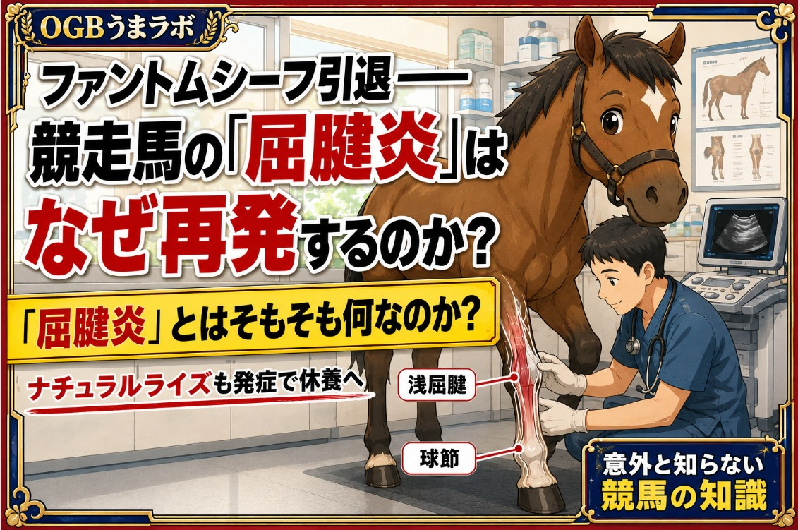
RULES意外と知らない競馬の知識 テーマ「屈腱炎」
2026年8月、競馬ファンにとって残念な故障のニュースが相次いだ。
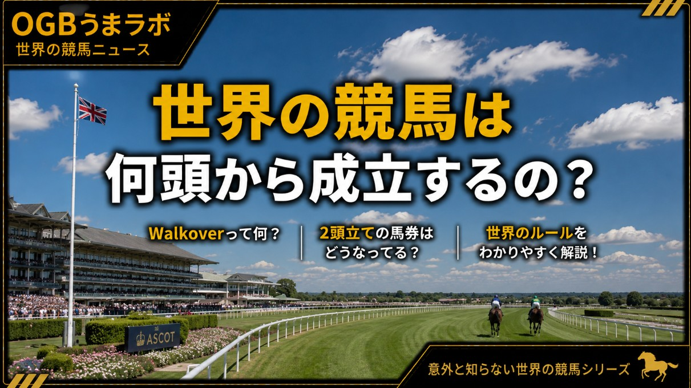
RULESJRAは3頭で競走取りやめ 世界の競馬は何頭の申し込みでレースが成立する？
記事全文を読む →
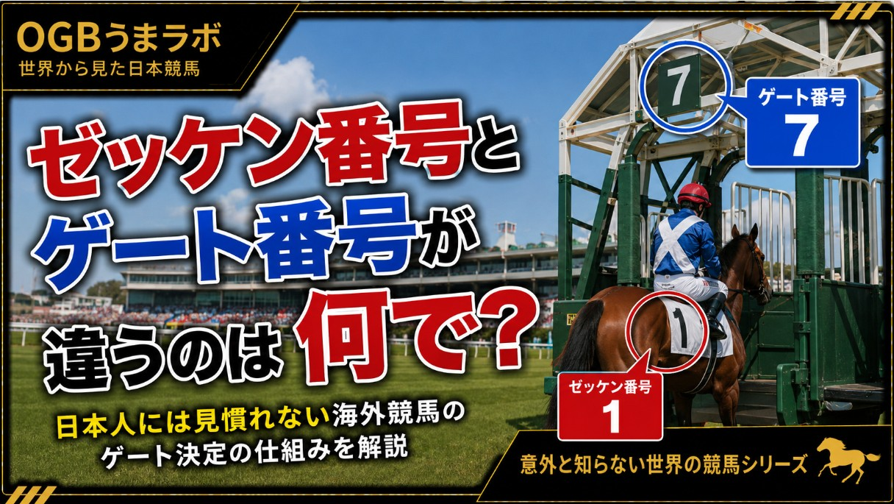
RULES「ゼッケン番号とゲート番号が違うのは何で？」日本人には見慣れない海外競馬のゲート決定の仕組みを解説
記事全文を読む →
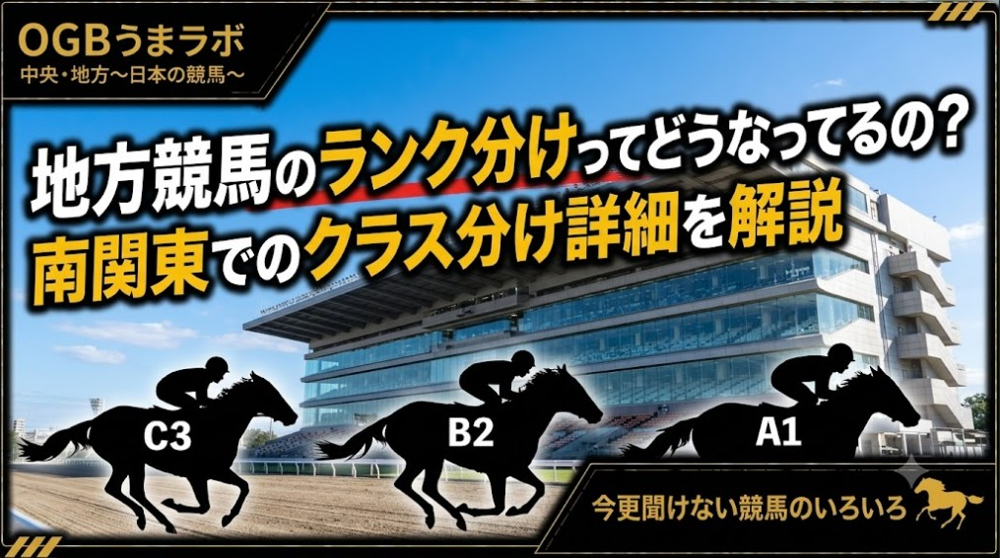
RULES【今更聞けない競馬のいろいろ】「C3二」と「C3五」って何が違うの？ そもそも「A1」「B2」「C3」はどうやって決まる？
Xで記事を読む →
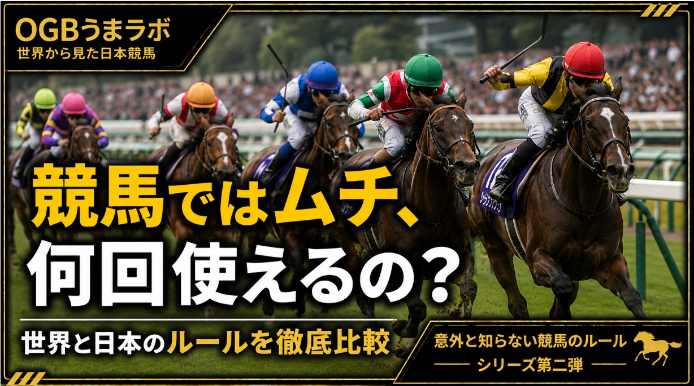
RULESレース中のムチは何回まで使えるのか 世界の競馬ルールを比べてみた
記事全文を読む →
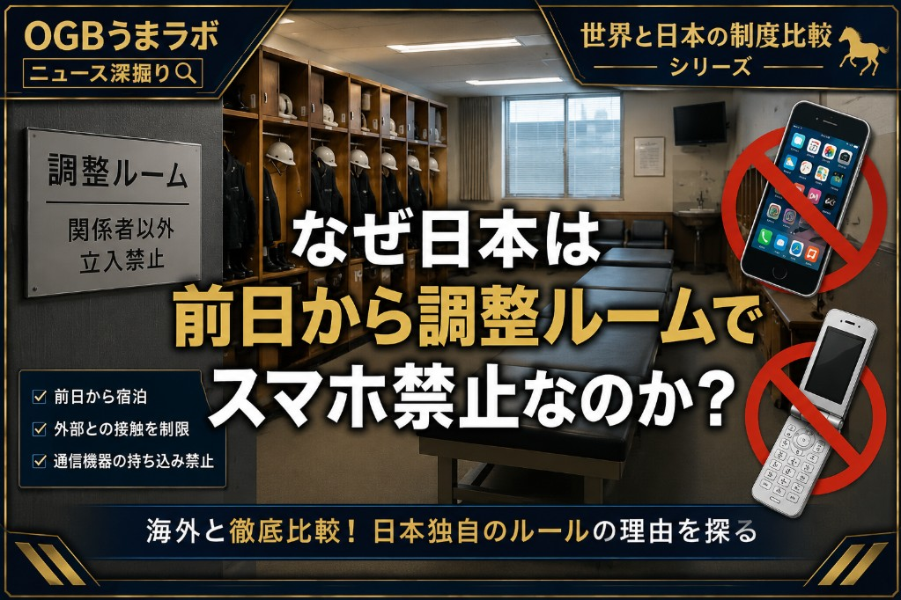
RULESスマホ使用で騎乗停止、引退も 日本競馬の通信機器ルールは世界とどう違う？
記事全文を読む →
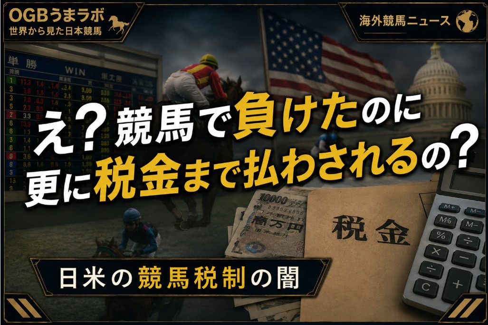
RULES競馬で負けたのに更に税金を払うの!? 日米で議論になる #競馬税制 の理不尽とは
記事全文を読む →
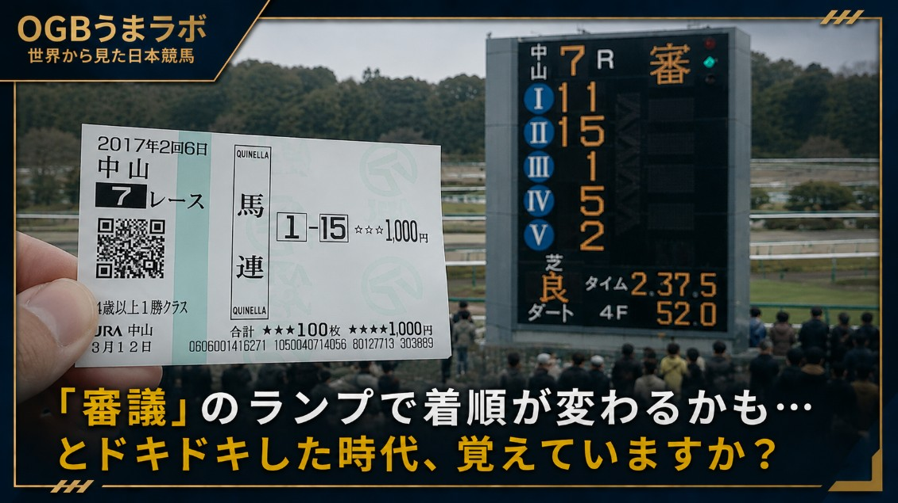
RULES故意の進路妨害でも降着なし アイルランド競馬の裁定から見えた「日本で降着が減った理由」
記事全文を読む →
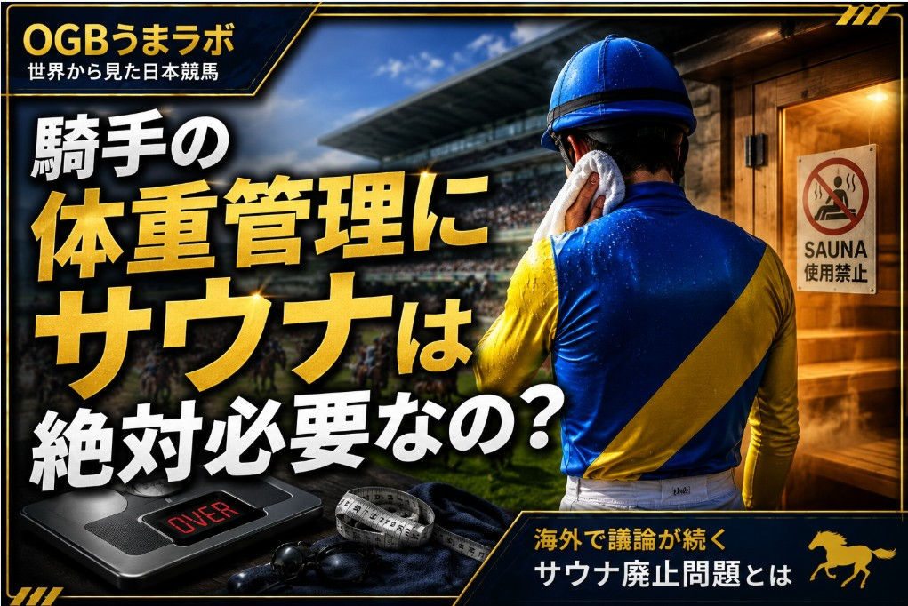
RULES騎手の体重管理にサウナは絶対必要なの？
記事全文を読む →
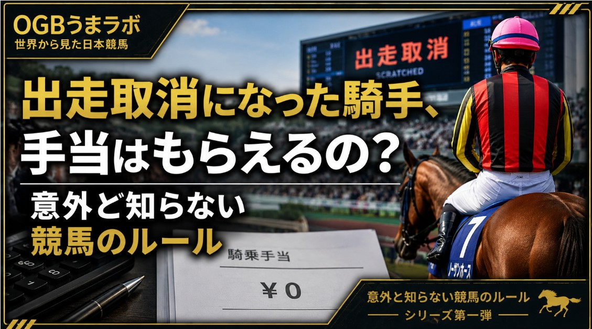
RULES出走取消で騎乗キャンセル 英国競馬が騎手報酬ルールを改正
記事全文を読む →
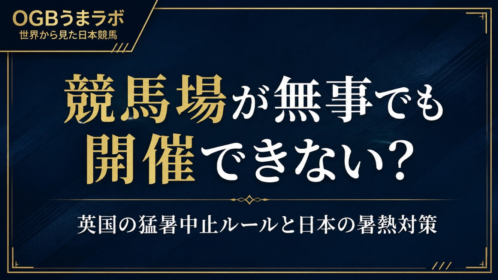
RULES英国の猛暑中止ルールと日本の暑熱対策
記事全文を読む →
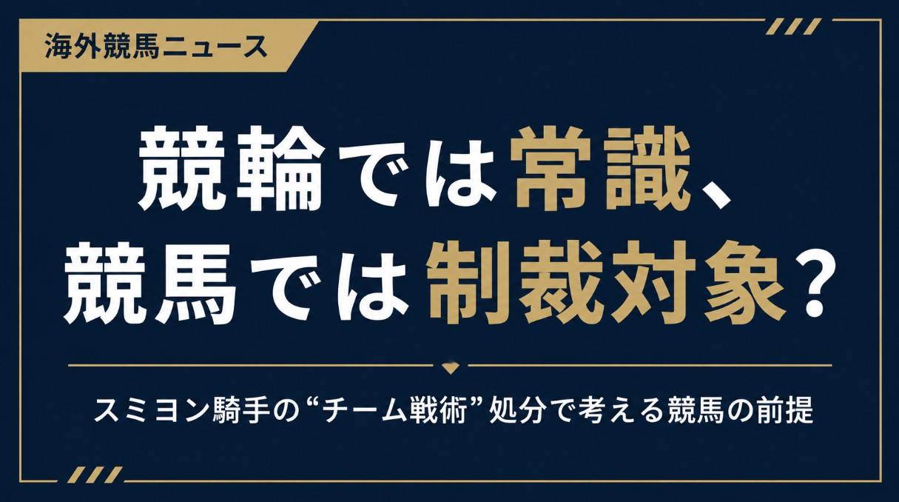
RULESスミヨン騎手のチーム戦術処分で考える競馬と競輪
記事全文を読む →
ARCHIVE過去の記事
過去の記事を見る →